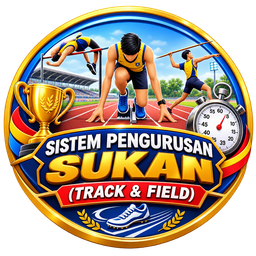

⚠️ Tiada sambungan internet. Sistem akan dimuat semula apabila talian pulih.

SISTEM PENGURUSAN KEJOHANAN SUKAN
SK Maludam · Memuatkan sistem...
Sistem mengambil masa lebih lama daripada biasa. Semak sambungan internet anda.
🔄 Muat Semula
⚙️ Tetapan belum lengkap
Pautan Web App Google Apps Script belum dimasukkan.
Di Apps Script:
Deploy › Manage deployments
, salin
Web app URL
(berakhir dengan
/exec
).
Di GitHub, buka fail
config.js
› ✏️ Edit, tampal pautan pada
APP_URL
, kemudian
Commit changes
.
Tunggu 1–2 minit, kemudian muat semula halaman ini.